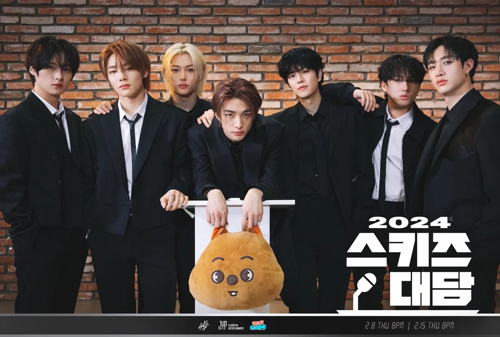

Stray Kids es un grupo de K-pop surcoreano formado por JYP Entertainment.
El grupo está compuesto por ocho miembros: Bang Chan, Lee Know, Changbin, Hyunjin, Han, Felix, Seungmin, y I.N.
Se dieron a conocer en 2017 a través de un programa de supervivencia del mismo nombre y debutaron oficialmente en marzo de 2018.
Stray Kids es conocido por su estilo único y su energía poderosa, tanto en sus actuaciones en vivo como en sus lanzamientos de música.
El grupo es destacado por su enfoque en la autoproducción, con los miembros participando activamente en la composición y producción de sus propias canciones.
Stray Kids ha ganado numerosos premios, incluyendo varios premios "Rookie of the Year" tras su debut. Han realizado giras internacionales y tienen una base de fans global muy apasionada.
Los fans de Stray Kids se llaman STAY. El grupo es conocido por su interacción cercana con sus fans y por valorar mucho su apoyo.
